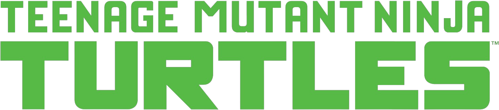
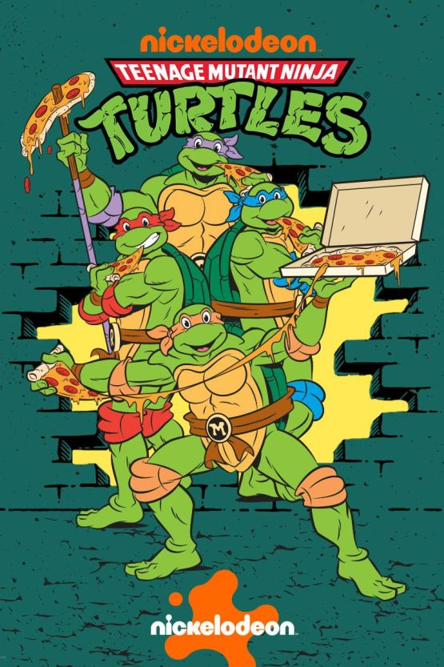
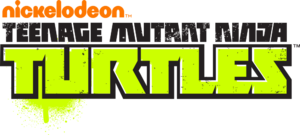
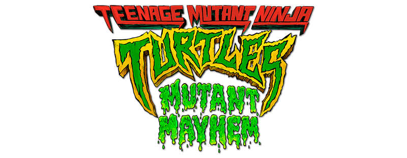
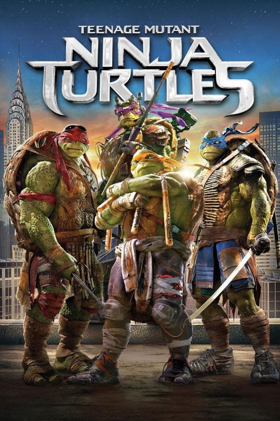
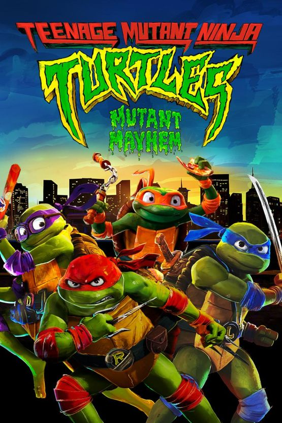

Pulp Alley - TMNT - Traducció al valencià

Tortugues Ninja
Campanya en tres actes: mutagen, màquina i Kraang
Benvinguts a Nova York, casa de les Tortugues Ninja Adolescents Mutants: Leonardo, Raphael, Donatello i Michelangelo. Els quatre germans lluiten una batalla constant contra amenaces de l'espai exterior, el malvat Clan del Peu i el seu líder Shredder.

Imatges d'ambientació


Sèries i pel·lícules


Introducció
La campanya TMNT està pensada per jugar-se amb totes les regles i personatges d'este llibre. És possible jugar-la amb una altra lliga pròpia, però llavors ja no serà una campanya TMNT pura.
Abans d'arribar a la campanya, el PDF original inclou personatges i bandes noves. Estes bandes i personatges s'usen durant la campanya TMNT, però també poden entrar en altres partides de Pulp Alley.
Què necessiteu
Material de joc
- El reglament de Pulp Alley.
- Pulp Leagues.
- Baralla Fortune.
- Cartes de personatge TMNT incloses al PDF original.
- Daus i cinta mètrica.
- Miniatures per representar les tortugues, aliats i enemics.
- Terreny per a una zona d'uns 3' x 3'.
- Un oponent.
Marcadors especials
Alguns escenaris inclouen terreny especial, criatures mutants o alienígenes. Necessitareu marcadors, comptadors o miniatures per representar-los a la taula.
Estructura
La campanya es divideix en tres actes, com un episodi, còmic o pel·lícula de les Tortugues Ninja. En els actes I i III, els escenaris es juguen en ordre. En l'acte II, el resultat d'alguns escenaris decideix quin escenari es juga després.
Les Tortugues
La primera i més important banda de la campanya són les Tortugues Ninja: Leonardo, Raphael, Donatello i Michelangelo.
Els quatre germans
- Leonardo: el líder.
- Raphael: la força.
- Donatello: l'inventor.
- Michelangelo: el col·lega.
Perk de rerefons
Les Tortugues tenen la perk de rerefons League of Legends.
- Slots: 10.
- Descripció: la lliga inclou 4 Sidekicks. Un Sidekick fa el paper de Leader: Leonardo.
Cartes de perfil
Les cartes exactes dels quatre germans estan al PDF original. Per jugar, convé copiar-les o imprimir-les.
El Clan del Peu
L'arxienemic de les tortugues és el poderós Shredder i el seu Clan del Peu.
Banda
- Shredder.
- Bebop.
- Rocksteady.
- 3 soldats ninja.
- 2 grups de Mousers.
Perk de rerefons
El Clan del Peu, amb Shredder com a líder, té Company of Heroes.
- Slots: 2.
- Descripció: la lliga pot incloure un segon Sidekick. Este Sidekick també costa 3 slots.
Notes
Shredder és un senyor de la guerra japonés amb aliats poderosos, com Bebop el porc senglar mutant i Rocksteady el rinoceront mutant. Les seues cartes exactes estan al PDF original.
Campanya
Les Tortugues han descobert que el Clan del Peu està reunint grans quantitats de llot morat per fabricar mutagen. Els quatre germans han d'impedir-ho. Si Shredder aconsegueix prou llot, podrà crear un exèrcit de soldats mutants. Un exèrcit de Bebops i Rocksteadys no és precisament el que necessita la gent de Nova York.
Plot points de pizza
Les Tortugues estimen la pizza, especialment Mikey. Algunes partides tenen plot points de pizza.
Com funcionen
- Compten com a plot points normals per a totes les bandes.
- Les Tortugues reben la recompensa normal.
- A més, guanyen una porció de pizza si controlen el plot point de pizza.
- Amb 4 porcions, poden gastar-les per fer 1 reroll en qualsevol partida.
- Poden acumular porcions per més rerolls: 8 porcions donen 2 rerolls, etc.
Si Mikey controla la pizza
Tireu 1d6:
- 1-3: les Tortugues guanyen 1 porció.
- 4-6: les Tortugues guanyen 2 porcions.
Màxim: 1 reroll gastat per partida.
Missatges misteriosos
Mentre continua la carrera pel llot morat, les Tortugues reben missatges estranys i misteriosos. Amb ordinadors extraviats i l'ajuda d'April O'Neil, descobreixen que Shredder no està recollint mutagen només per a ell.
Mr. K, April i Baxter
Mr. K
El misteriós Mr. K controla cada moviment del Clan del Peu. Sap coses sobre Leonardo, Donatello, Raphael, Michelangelo i fins i tot el mestre Splinter. És un nou vilà perillós? Algú que fins i tot el poderós Shredder tem?
April O'Neil
April serà un plot point, sovint major, en alguns escenaris. Segons el resultat, les Tortugues o el Clan del Peu podran usar April en la seua banda. La seua carta de perfil està al final del PDF original.
Baxter Stockman
El Clan del Peu comença amb 2 Sidekicks: Bebop i Rocksteady. Quan comença l'Acte II, el Clan del Peu pot arribar a triar entre 3 Sidekicks: Bebop, Rocksteady i el Dr. Stockman. Alguns resultats permeten tindre els 3.
Marcadors de claveguera
Les Tortugues viuen a les clavegueres de Nova York amb el mestre Splinter. El Clan del Peu tampoc és alié a moure's per les clavegueres per vigilar els carrers sense ser vist.
Quan s'usen
Si un escenari té la regla especial Sewer markers, cada jugador pot col·locar 2 marcadors de claveguera a la taula.
Col·locació
- Cap marcador pot estar a menys de 8" d'un altre marcador de claveguera.
- Els jugadors alternen la col·locació.
Moviment
- Un model pot entrar en un marcador si acaba el moviment sobre ell i no està en contacte base amb un enemic.
- No pot disparar en el torn en què entra a la claveguera.
- En la següent activació, pot eixir per qualsevol marcador lliure.
- Un marcador és lliure si no hi ha cap model en contacte amb ell.
Ambientacions alternatives
El PDF proposa usar esta estructura amb altres bandes.
Gotham City
Batman, Robin, Batgirl i Nightwing persegueixen el Joker i els seus sequaços. El Joker ha aconseguit una gran quantitat de químics ACE i vol usar-los en un pla terrible. Els marcadors de pizza poden convertir-se en pistes: amb 4 pistes, la Bat-família guanya 1 reroll.
Harry Potter
Draco Malfoy intenta introduir materials màgics de broma a Hogwarts. Harry i els seus amics han d'impedir-ho mentre descobreixen que Qui-tu-saps intenta controlar Hogwarts a través de Draco. Les clavegueres poden ser escales màgiques; les pizzes, llibres o proves O.W.L.S.
Spy-Fi i ciència-ficció
En Spy-Fi, el superespia 008 descobreix que un magnat rus del petroli recull un oli estrany per a una màquina del judici final. En ciència-ficció, un grup de renegats lluita contra un senyor de la guerra controlat per un amo alienígena. Les clavegueres poden ser entrades secretes o portals.
Acte I: Mutagen
En l'Acte I tot gira al voltant del mutagen. El Clan del Peu necessita recollir-lo i les Tortugues han d'impedir-ho.
Plot points de mutagen
- Si les Tortugues controlen un plot point de mutagen, compta com un plot point normal amb recompensa normal.
- Han arribat abans que el Clan del Peu.
Si el Clan del Peu controla mutagen
- Rep la recompensa normal.
- A més, tira per unitats de mutagen.
- Plot point major: +1d12 unitats.
- Plot point menor: +1d10 unitats.
Pas a l'Acte II
Els escenaris de l'Acte I solen jugar-se en ordre. Si el Clan del Peu aconsegueix més de 35 unitats de mutagen, comenceu automàticament l'Acte II. Si les Tortugues recullen els 5 missatges misteriosos de Mr. K, obtindran una bonificació en l'Acte III.
Escenari 1: Caos al port
El Clan del Peu va darrere d'un carregament de mutagen trobat als molls de Nova York. Les Tortugues han d'aturar-lo entre contenidors, grues i materials industrials.
Regles especials
- Marcadors de claveguera.
- Plot points de pizza.
- Plot points de mutagen.
Plot points
- Carregament gran de mutagen: plot point major al centre. És extremadament perillós perquè un recipient està danyat i el mutagen sense refinar s'escampa.
- Pizza: plot point normal, amb porcions per a les Tortugues.
- 2 carregaments menuts: un col·locat pel Clan del Peu i un per les Tortugues.
- Ordinador: tauleta del Clan del Peu amb un correu misteriós de Mr. K donant ordres a Shredder.
Perills comuns
Piles de barrils, barres metàl·liques, cadenes de grua i trampes oblidades per Bebop i Rocksteady.
Preparació
- Taula de 3' x 3'.
- Col·loqueu de 7 a 12 peces de terreny: 1d6+6.
- Els contenidors haurien d'estar sobretot al centre.
- El plot point major va al centre.
- Els jugadors alternen els altres 4 marcadors; cap a menys de 6" d'un altre marcador o de la vora.
- Cada jugador col·loca 2 marcadors de claveguera, cap a menys de 8" d'un altre.
- Desplegament en vores oposades, a 6" de la pròpia vora i a més de 6" de plot points o enemics.
- Límit: 6 torns. Després arriba la policia.
Recompenses i després
El Clan del Peu guanya unitats de mutagen pels plot points de mutagen que controle. Si arriba a 35 o més, comença l'Acte II. Qui controle el plot point major serà el defensor en el següent escenari.
Escenari 2: Obriu-lo!
La carrera continua. El gran carregament està dins d'un contenidor tancat. Una banda el controla, però encara ha d'obrir-lo.
Regles especials
- Marcadors de claveguera.
- Plot points de pizza.
- Plot points de mutagen.
Plot points
- Carregament gran: plot point major.
- Ordinador: tauleta protegida. Abans d'intentar-lo, cal fer 2 èxits amb Cunning.
- Pizza.
- 2 carregaments menuts de mutagen.
Major especial
Només el líder defensor pot completar/controlar el plot point major. Ha de completar tres challenges aleatoris en el mateix plot point, com a mínim en 3 accions i 3 torns diferents.
Preparació
- Taula de 3' x 3'.
- 7 a 12 peces de terreny, preferiblement prop dels molls de l'escenari 1.
- Plot point major al centre.
- Si ningú controlava el major en l'escenari 1, qui té iniciativa tria atacant o defensor.
- El defensor desplega a 6" del major, però no a 6" d'altres plot points.
- L'atacant desplega a 6" de qualsevol vora, però no a 6" d'un plot point.
- Límit: 6 torns.
Recompenses i després
El Clan del Peu guanya mutagen pels plot points controlats. Si el major queda sense controlar al final, l'atacant rep la recompensa. April O'Neil ha trobat notícies sobre el mutagen i tots dos bàndols volen la informació.
Escenari 3: L'informe d'O'Neil
April O'Neil ha seguit la carrera del mutagen per la ciutat i ha trobat una informació crucial. El Clan del Peu també ho sap.
Regles especials
- Marcadors de claveguera.
- Plot points de pizza.
- Plot points de mutagen.
Plot points
- April O'Neil: plot point major. Intentar-lo és extremadament perillós; de nit no distingeix ninjas de Tortugues Ninja.
- Furgoneta de Channel 6: plot point. Si està a 12" d'April, intentar-lo és extremadament perillós. Al final de cada torn es mou 6" cap a April.
- Pizza.
- 2 carregaments menuts de mutagen.
Perills comuns
Cotxes accidentats, obres, corredors de carrer massa ràpids i contenidors amb animals dins.
Preparació
- Taula de 3' x 3'.
- 7 a 12 peces de terreny.
- April comença al centre.
- Els altres 4 marcadors es col·loquen alternant; cap a menys de 6" d'un altre marcador o de la vora.
- Desplegament altern: els jugadors col·loquen un personatge cada vegada. Cap pot desplegar a 6" d'un plot point o enemic.
- Límit: 6 torns. Després arriba Channel 6.
Recompenses i després
Qui controle April podrà afegir-la en el següent escenari. April ha descobert que un gran carregament arriba a Nova York per ordre d'un misteriós Mr. K.
Escenari 4: Transport de mutagen
El transport de mutagen entra a la ciutat. April guia tots dos bàndols al lloc per on arribarà. Podran les Tortugues apoderar-se del camió abans que Shredder?
Regles especials
- Plot points de pizza.
- Plot points de mutagen.
Plot points
- Camió de mutagen: plot point major. Es mou per la taula i no s'atura. Intentar-lo és extremadament perillós en un radi de 3".
- Cons de trànsit: plot point. Poden usar-se per bloquejar o canviar el camí del camió.
- Ordinador: tauleta amb correu de Mr. K; cal hacking amb 2 èxits de Cunning i és molt segura.
- Pizza.
- Carregaments menuts de mutagen.
Moviment del camió
El camió entra al torn 1 després que tots els models hagen activat. Mou 6" seguint la carretera i marques. Si toca escenografia, s'estavella i s'atura. Models en contacte o al camí reben un atac de Brawl de 3d12 i només poden usar Dodge.
Preparació
- Taula de 3' x 3' amb una intersecció en T.
- 4 a 9 peces de terreny: 1d6+3.
- El camió entra per una vora de carretera.
- Els altres 4 marcadors es col·loquen com normalment.
- Desplegament altern de personatges, sense estar a 6" de plot points, enemics o la vora d'entrada del camió.
- Límit: 6 torns o fins que el camió ix/queda accidentat.
Recompenses i després
El Clan del Peu guanya mutagen pels plot points controlats. L'Acte II comença igualment, encara que el Clan no tinga 35 unitats: la màquina de mutagen serà extremadament perillosa.
Acte II: La màquina
A diferència de l'Acte I, l'Acte II comença amb La màquina de mutagen i continua amb El dilema. El resultat d'El dilema decideix quin escenari ve després. Slash!! sempre es jugarà, però pot canviar segons els resultats previs.
Plot points comuns de l'Acte II
Ordinador amb trampa
Shredder ha posat trampes als seus dispositius després de diversos hackejos.
- Primer calen 2 èxits amb Cunning.
- Intentar-lo és extremadament perillós.
Residus de mutagen
El mutagen recollit en l'Acte I es refina i deixa residus per la ciutat. Si un personatge acaba un escenari amb residus de mutagen, pot tirar 1d6:
- 1: malaltia; falla automàticament les tirades de recuperació del següent escenari.
- 2: enganxós; no pot córrer en el següent escenari.
- 3: sense efecte.
- 4: mutació curativa; passa la primera recuperació del següent escenari.
- 5: mutació cerebral; passa el primer challenge 2 del següent escenari.
- 6: poder mutant; una habilitat aleatòria puja un tipus de dau en el següent escenari.
Missatges de Mr. K
En l'Acte I es podien aconseguir 3 missatges. En l'Acte II es poden aconseguir 2 més, i pot haver-hi oportunitats extra si es juga Rescat o Lluites. Si les Tortugues aconsegueixen els 5 missatges, reben una bonificació en l'Acte III.
Escenari 5: La màquina de mutagen
El mutagen ha de destil·lar-se i preparar-se per als plans de Shredder. El Clan del Peu busca les peces de la màquina i, sobretot, Baxter Stockman. Les Tortugues volen impedir-ho.
Regles especials
- Plot points de pizza.
- Ordinador amb trampa.
- Search: quan es captura un plot point, el jugador col·loca immediatament un marcador no descobert.
- El major no pot col·locar-se fins que la lliga controle dos altres plot points.
Plot points
- 3 peces de la màquina de mutagen: plot points.
- Ordinador amb trampa.
- Baxter Stockman: plot point major. Intentar-lo és extremadament perillós; esquiveu tornavisos i tentacles de mosca.
Preparació
- Taula de 3' x 3'.
- 7 a 12 peces de terreny.
- Cada jugador col·loca només un marcador menor al principi.
- El primer marcador ha d'estar a 12" d'una cantonada; el segon a 12" de la cantonada oposada.
- Desplegament en cantonades oposades, a 12" de la pròpia cantonada i a més de 6" de plot points.
- Límit: 6 torns.
Recompenses i després
Si el Clan del Peu guanya, pot triar Sidekick entre Bebop o Rocksteady. Si guanyen les Tortugues, elles trien quin Sidekick tindrà el Clan. Shredder té la màquina quasi funcionant, però April ha aparegut.
Escenari 6: El dilema
Shredder té Baxter Stockman treballant en la màquina, però April O'Neil ha sigut capturada mentre investigava. Les Tortugues han de triar: salvar April o impedir que la màquina s'engegue.
Dilema
Hi ha 2 plot points majors. Cada jugador tria en secret quin vol intentar. El que no trie no estarà disponible per a ell.
- April O'Neil: plot point major. Intentar-lo és extremadament perillós.
- Màquina de mutagen: plot point major. Productes químics volàtils la fan extremadament perillosa.
Altres plot points
- Pizza.
- 1 prova que Shredder muta humans en híbrids home/bèstia.
- Mestre Splinter com a plot point.
- Ordinador amb trampa.
- Residus de mutagen.
Preparació
- Taula de 3' x 3', preferiblement laboratori.
- 7 a 12 peces de terreny.
- Els dos majors es col·loquen al centre, a 6" o menys entre ells.
- Els altres 4 marcadors es col·loquen normalment.
- Desplegament en vores oposades, a 6" de la vora i a més de 6" de plot points o enemics.
- Límit: 6 torns. Després la màquina comença a refinar el llot morat.
Després del dilema
- Si el Clan del Peu controla la màquina, el següent escenari és Slash!
- Si el Clan del Peu no controla cap major, el següent és Lluites, amb el Clan com a defensor.
- Si les Tortugues controlen la màquina, alguna cosa va terriblement malament perquè Mikey deixa caure pizza dins. Tireu 1d6 en la taula de mal funcionament del PDF original; pot provocar canvi de cossos, ferides, fum, o permetre també salvar April.
- Si el Clan controla April, el següent escenari és Rescat, amb el Clan com a captor.
Escenari 7.1: Rescat
Els ninjas del Clan del Peu han capturat April O'Neil. Shredder vol acabar amb ella d'una vegada per totes. Les Tortugues intenten salvar la seua amiga.
Regles especials
- Marcadors de claveguera.
- April O'Neil és el plot point major.
- Tireu 1d6 per saber com Shredder vol eliminar April:
- 1-2: raig làser; el perill compta com un Burst de 3".
- 3-4: bany de llot sense refinar; extremadament perillós.
- 5: mort japonesa d'aigua; l'àrea a 6" és perillosa.
- 6: Shredder ho farà ell mateix; sense regla especial.
Altres plot points
- 2 residus de mutagen.
- Dron de seguretat: extremadament perillós; si es falla, el personatge és llançat 2d6" en direcció aleatòria.
- Mestre Splinter: l'àrea a 6" és extremadament perillosa; si es completa abans del torn 4, podeu sumar o restar 1 torn a la duració de l'escenari.
Preparació
- Taula de 3' x 3' al cau de Shredder: temple, edifici, jardí de monestir, etc.
- 7 a 12 peces de terreny.
- April al centre.
- Els altres marcadors es col·loquen normalment.
- Desplegament per vores, a 3" de la pròpia vora i a més de 6" de plot points o enemics.
- Límit: 6 torns.
Recompenses i després
Si les Tortugues controlen April, el Clan serà defensor en Lluites, April ajudarà a derrotar Shredder i les Tortugues triaran 2 Sidekicks per al Clan. Si el Clan controla April, les Tortugues seran defensores i podran triar 2 dels 3 Sidekicks.
Escenari 7.2: Lluites
La trampa de Splinter s'ha activat. La captura d'April era una maniobra per atrapar Leonardo. O potser la trampa ix malament i Shredder queda aïllat.
Regles especials
- Marcadors de claveguera.
- Plot points de pizza.
- Residus de mutagen.
- Els plot points es col·loquen després del desplegament.
Plot points
- Líder defensor: plot point major. Shredder o Leonardo queda aïllat. Si queda Down, un altre personatge pot intentar capturar-lo com un plot point normal.
- Pizza.
- 2 residus de mutagen.
- Prova de Mr. K: evidència sobre què o qui és Mr. K; compta com a missatge de Mr. K.
Preparació
- Taula de 3' x 3' dins del cau de Shredder.
- 7 a 12 peces de terreny.
- Primer es desplega el líder defensor a 6" d'una cantonada.
- La resta de la seua lliga desplega a 12" de la cantonada oposada.
- Els atacants despleguen a 12", però no a menys d'1" del líder enemic.
- Límit: 6 torns.
Recompenses i després
Si el líder defensor evita quedar KO o capturat al final, rep la recompensa del major. Si no, la rep l'atacant. Al final, Stockman ha creat un mutant: Slash arriba.
Escenari 7.3: Slash!!
Slash ha sigut creat pel llot. Però, a més, un portal està a punt d'obrir-se al carrer. Slash protegeix el portal amb fúria.
Slash
- Slash és el plot point major.
- Activa al final de cada seqüència d'acció, després de tots.
- Ataca sempre el personatge més proper al portal.
- Si el seu objectiu està a 12" del portal, carrega.
- Si no, dispara.
- No es mou excepte per carregar a un objectiu a 12" del portal.
Aparells del portal
Per obrir el portal, les tres màquines han d'activar-se en el mateix torn:
- Màquina de mutagen: 2 èxits amb Might o Finesse.
- Diafragma dimensional: 2 èxits amb Finesse o Cunning.
- Generador de potència: 2 èxits amb Cunning o Might.
Si no s'activen les tres en el mateix torn, es reinicien al començament del següent.
Preparació
- Taula de 3' x 3'.
- Portal en una cantonada.
- Slash a 3" directament davant del portal.
- Les màquines a 12" de Slash i a més de 6" entre elles.
- Els jugadors despleguen en les altres tres cantonades, a 6" de la pròpia cantonada.
- Límit: 6 torns. Si ningú travessa el portal, l'escenari es repeteix.
Recompenses i després
La lliga victoriosa pot incloure April en el següent escenari. Si un personatge acaba amb recompensa +1 Gear, +1 Contact o +1 Backup, el bonus d'habilitat també passa al següent escenari. Si algú deixa KO a Slash, guanya +1 XP; si no, els tres personatges que obriren el portal roben recompenses.
Acte III: KRAANG!!
El misteriós Mr. K és l'amo de la guerra alienígena Kraang. Ha controlat Slash per impedir que les Tortugues arriben a la seua nau: el Technodrome.
El Clan del Peu ha comés un error terrible. El misteriós Mr. K, que finançava els plans de Shredder, és en realitat un ésser d'una altra dimensió. Les Tortugues i el Clan del Peu han entrat a la nau mare de Kraang. Ara tots han d'evitar que el Technodrome arribe a la Terra.
Problemes alienígenes
Els dos escenaris finals poden ser molt difícils.
Visió interdimensional
Si un escenari acaba en desastre total, podeu considerar que era una visió interdimensional implantada per Kraang per advertir què passarà si fracassen. Repetiu l'escenari amb el coneixement obtingut.
Un planeta, un tamashii
És molt Pulp Alley que dues lligues enemigues s'ajuden de tant en tant. Shredder i les Tortugues poden decidir no molestar-se massa fins derrotar Kraang. No és una regla: és un acord d'honor.
Beneficis terrenals
- Si les Tortugues han trobat 4 missatges secrets de Mr. K, April s'uneix a elles per a la resta de la campanya.
- Els rerolls de pizza no gastats poden usar-se en Technodrome.
- Si el Clan del Peu s'ha centrat en la màquina, ha aconseguit 35 unitats de mutagen en l'Acte I i va triar la màquina en El dilema, tindrà els 3 Sidekicks disponibles. Un d'ells baixa el dau de Health un tipus.
Escenari 8: Technodrome
Kraang dona la benvinguda a Shredder. Ha usat el Clan del Peu per portar-li mutagen i, de passada, unes Tortugues per bullir. La nau comença a desintegrar-se per travessar el portal cap a la Terra. L'única opció és arribar al panell de control.
Plot point major
Panell de control: està protegit pels tentacles de Kraang. Per completar-lo cal superar un challenge amb 3 èxits amb Might, Cunning o Finesse. Intentar-lo és extremadament perillós.
Esdeveniments programats
- Torn 1: fragments metàl·lics volen per l'aire. Tots els dispars pateixen -1D fins al final.
- Torn 2: minions robòtics protegeixen Kraang. L'àrea a 18" de Kraang és perillosa.
- Torn 3: grans trossos del Technodrome se separen. Col·loqueu 10 peces flotants; l'àrea a 18" de Kraang és extremadament perillosa.
- Torn 4: la capa exterior es desmunta ràpidament. Els personatges que continuen a terra han d'intentar pujar a una peça flotant o queden fora de joc.
- Torn 5: algunes peces desapareixen i reapareixen a Nova York. Personatges sobre peces que exploten han de superar un perill aleatori o queden fora.
Preparació
- Taula de 3' x 3' com a nau de ciència-ficció.
- Es col·loquen 11 peces flotants al torn 3: una de 3" sota Kraang i deu de 2".
- Només hi ha un plot point: el panell de control.
- Els jugadors trien una de tres zones de desplegament.
- Personatges a més de 24" de Kraang.
- Qui no travessà el portal en l'escenari anterior no desplega fins al torn 2.
Final de l'escenari
L'escenari acaba immediatament si es completa el challenge del panell. Si no, al final de 6 torns Kraang obri el portal i el Technodrome entra en la dimensió de la Terra.
Escenari 9: Cowabunga!
El portal a la dimensió de Kraang està a punt de tancar-se. Les Tortugues han de tornar a la Terra, però Slash ha entrat pel portal sota el control mental de Kraang.
Regles especials
- Marcadors de claveguera.
- Plot points de pizza.
- Plot points de mutagen.
Portal
Hi ha 2 plot points principals: el portal per tornar a la Terra i Kraang.
El portal es torna inestable:
- Torn 1: intentar-lo és extremadament perillós.
- Torn 2: Slash travessa el portal i el protegeix.
- Torn 3: l'àrea a 6" del portal és perillosa.
- Torn 4: Kraang comença a tancar-lo; al començament de cada torn, amb 5+ en 1d6 el portal es tanca i qui no haja passat queda atrapat.
Kraang i Slash
- Kraang: plot point. Intentar-lo és extremadament perillós. Si cau, Slash deixa de protegir el portal i torna a Nova York.
- Slash: usa el perfil del PDF original. Activa al final de cada seqüència. Ataca el personatge més proper al portal, carrega si està a 12", i només es mou per carregar prop del portal. Com que va quedar ferit, el seu dau de Health baixa un tipus.
Preparació
- Taula de 3' x 3' al Technodrome trencat.
- El portal es posa al centre d'una vora.
- Kraang es posa al centre de la taula.
- Cada jugador desplega en una de les dues cantonades oposades al portal, a 6" de la cantonada.
- Límit: 6 torns, però el portal pot tancar-se abans a partir del torn 4.
Recompenses
Es recullen recompenses normals per Kraang. Quan un personatge fereix Slash, rep una Reward card aleatòria. Es poden guanyar fins a 4 recompenses així. Després, passeu al final de campanya.
El final
Amb un soroll enorme, les Tortugues cauen sobre una torre d'aigua al terrat d'un edifici de Nova York. No queda clar què ha passat amb Shredder i el Clan del Peu. Han eixit del Technodrome? Tornarà Kraang? I què passarà amb Slash?
Per ara, la pau torna a Nova York. La gent mai sabrà que una amenaça alienígena ha estat a punt de destruir la seua existència.
"Cowabunga!", diu Mikey, una mica cansat. "És hora de pizza, germans!"
I les Tortugues tornen a les clavegueres per descansar i menjar un muntó de pizzes extra picants de pepperoni.
Recompenses finals
Cada lliga que completa la campanya TMNT rep, si voleu usar-la en altres partides:
Recompensa de campanya
- +15 Reputation.
- +3 XP.
- +1 Contact.
- +1 Gear.
- +1 Backup.
- +1 Tip.
Panell de control de Kraang
Si un personatge va completar el plot point del panell de control, part dels poders mentals de Kraang l'han impregnat.
- La lliga rep +5 Reputation.
- El personatge guanya l'habilitat Mindblast.
Personatges d'escenari
El PDF original inclou cartes per a April O'Neil, Slash i Baxter Stockman. Les cartes exactes s'han de consultar al PDF perquè apareixen com a perfils gràfics.
Personatges addicionals
April O'Neil
La millor reportera de Channel 6. És amiga de les Tortugues i del mestre Splinter. A vegades pot veure's obligada a ajudar el Clan del Peu contra la seua voluntat.
Slash
Antiga tortuga mascota de Raphael, ara convertida en un mutant agressiu i brutal. És una versió fosca dels quatre germans, però pot arribar a vore la llum i convertir-se en antiheroi.
Baxter Stockman
Científic convertit en mosca mutant. Té una ment brillant i desviada. Va crear els robots Mouser, una plaga de Nova York. Pot ser Sidekick del Clan del Peu.
Crèdits
Traducció al valencià per a ús personal a partir del PDF
NinjaTurtlesPA_Expansion.pdf proporcionat localment. El PDF
original acredita Niels Jochems, Davids Phipps i el grup de playtesters
indicat en el document. Pulp Alley i TMNT pertanyen als seus titulars
respectius. Per jugar cal el reglament oficial de Pulp Alley i les
cartes/perfils del PDF original.
Imatges incorporades per donar ambientació visual a una còpia d'ús personal i intern:
- Pòsters oficials
Teenage Mutant Ninja Turtles (1987),Teenage Mutant Ninja Turtles (2014)iTeenage Mutant Ninja Turtles: Mutant Mayhem, Paramount Pictures. - Logotip
Teenage Mutant Ninja Turtles 2022 franchise logo, Wikimedia Commons. Commons el marca com a text/logo simple de domini públic, amb possible restricció de marca. - Logotips
TMNT 2012 LogoiTeenage Mutant Ninja Turtles Mutant Mayhem Logo, Wikimedia Commons.